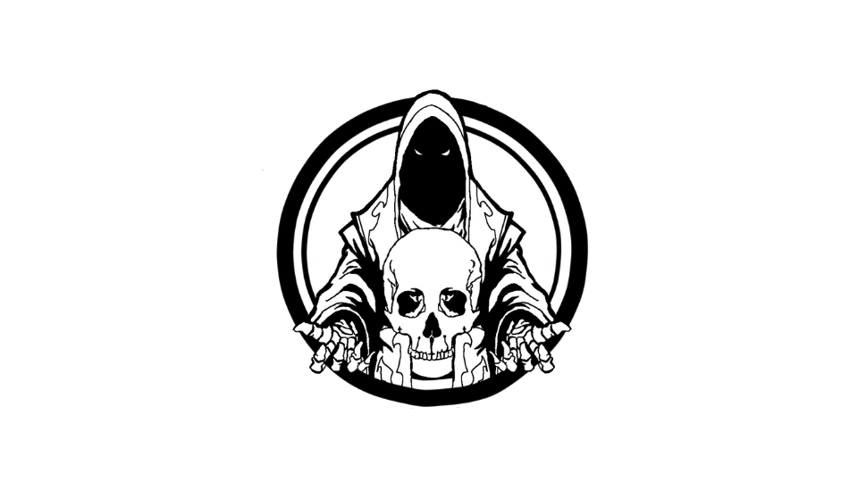

Press Release
Titulo: Ascensão do Necromante
Genero: RPG tatico
Plataformas: Pc (Itch.io/Steam)
Desenvolvedor: João Vitor de Paula Oliveira (“Jonny”)
Sobre o Jogo
Ascensão do Necromante é um RPG tático em pixel-art isométrico ambientado em um mundo medieval decadente, onde a magia rompe as leis naturais da vida e da morte. O jogador assume o controle de um guerreiro esquelético, renascido por forças sombrias, em uma jornada para desafiar a luz sagrada que domina o reino.
Entre ruínas góticas, aldeias abandonadas e câmaras subterrâneas, cada fase apresenta novos inimigos, segredos ocultos e magias arcanas que moldam a progressão do protagonista. A narrativa explora a tensão entre trevas e luz, colocando em xeque a ideia de heróis e vilões em um mundo moralmente cinzento.
Destaques e Recursos
- Estilo artístico único: pixel-art isométrico com estética gótica e medieval.
- Combate tático em grid: batalhas por turnos que exigem estratégia e posicionamento cuidadoso.
- Exploração sombria: descubra tesouros, magias e segredos escondidos em ambientes decadentes.
- Dinâmica de personagens: diálogos e interações que misturam humor sombrio e profundidade emocional.
Sobre o Desenvolvedor
Tenho 22 anos e uma paixão por jogos. Este é meu primeiro jogo solo de maior escopo, desenvolvido como parte de um projeto para a faculdade FIAP, no curso de Game Development. Cada linha de código e cada design representam minha jornada de aprendizado no universo do desenvolvimento de games.
Contato
- Por este site no canto superior direito
- Email: joao.jonny.vitor@gmail.com
- Github: Joao-Jonny-Vitor